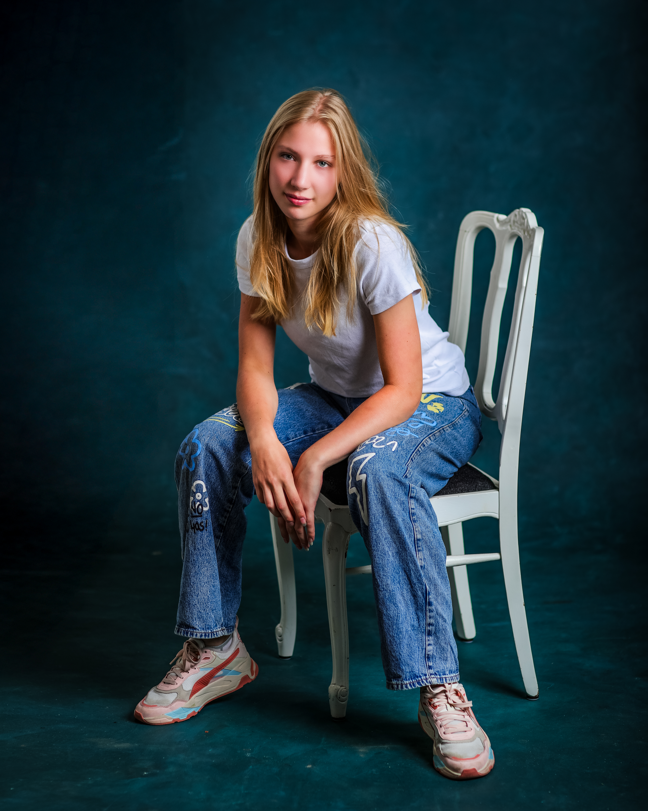
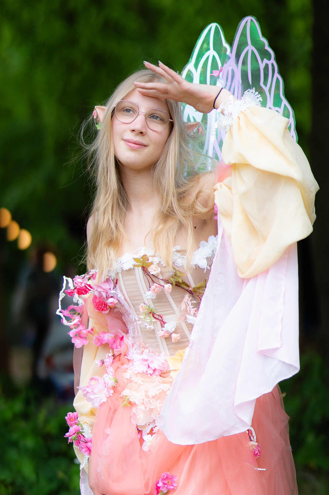
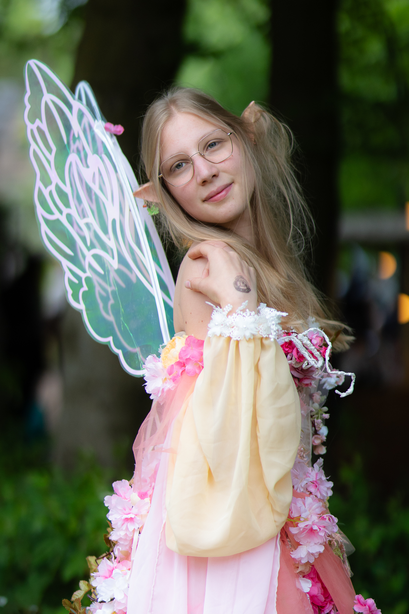
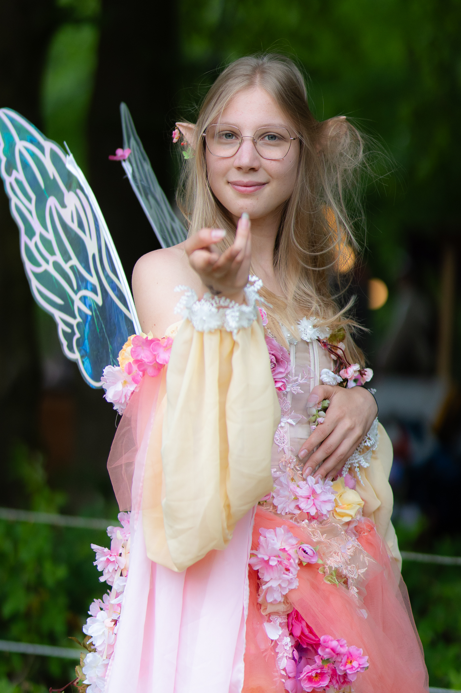
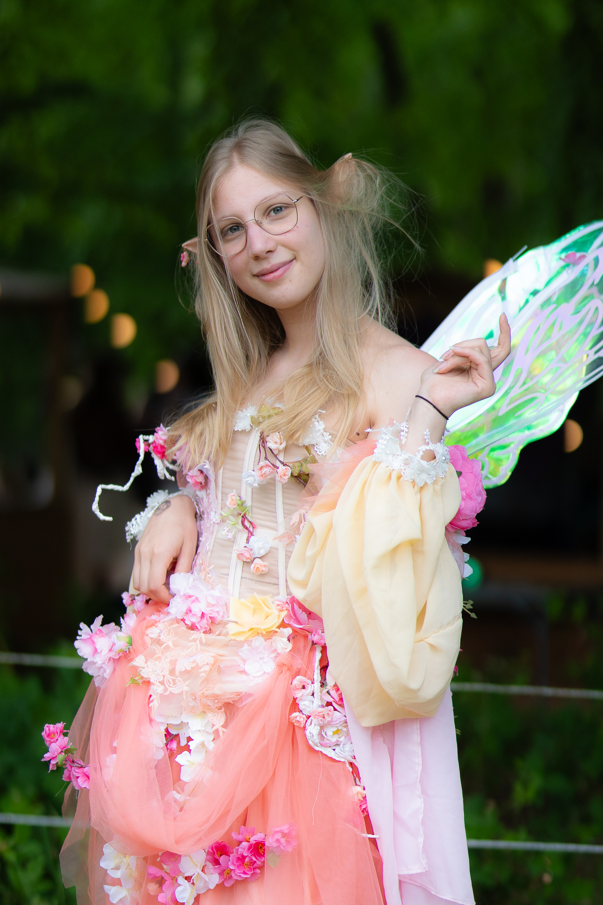
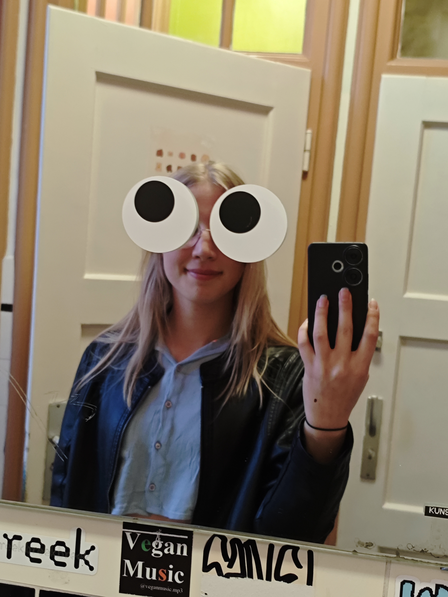
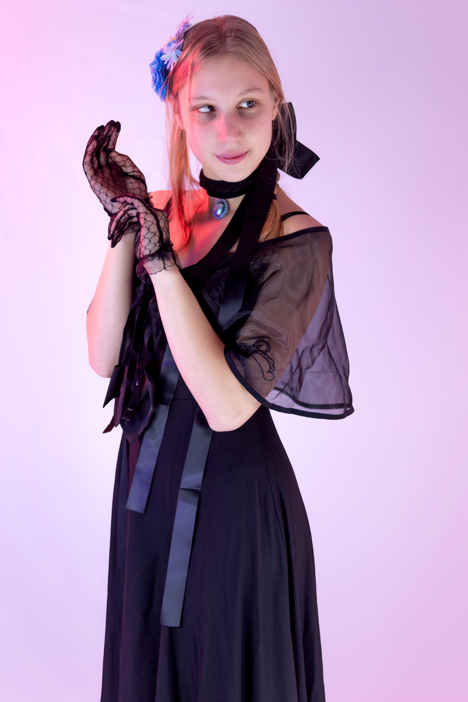

Meer Over Rebecca ✦
“Creativiteit is geen hobby, maar mijn manier van kijken naar de wereld.”
🎨 Van Donald Duck tot Fotograaf & Designer
Mijn ontdekkingsreis in de creatieve wereld begon al heel vroeg. Als kind zat ik altijd te schetsen en droomde ik er van om ooit striptekenaar te worden voor de Donald Duck. Het bedenken van karakters, verhaallijnen en visuele werelden zat er toen al helemaal in.
Tijdens mijn MBO-opleiding aan Yonder (CCR) ontdekte ik het fotografievak en schafte ik mijn eerste eigen spiegelreflexcamera aan. Toen viel alles op z'n plek: foto's maken bleek voor mij de perfecte manier om sfeer, emotie en verhalen vast te leggen. Vervolgens ben ik doorgestroomd naar de HBO-opleiding Communication & Multimedia Design (CMD) aan Avans Hogeschool in Breda/Tilburg, waar ik mijn visuele passie combineer met strategisch ontwerpen, user experience en branding.
⚡ Wat mij typeert als maker
🔥 Hoge energie & Leergierig: Ik wil mezelf continu uitdagen en nieuwe technieken of tools (zoals AI, 3D en videobewerking) snel meester maken.
👁️ Oog voor Detail: Of het nu gaat om een fotobewerking in Lightroom of een ruimtelijk ontwerp; elk detail telt voor het totaalgevoel.
🤝 Empathisch inleven: Ik verplaats me moeiteloos in doelgroepen en merkidentiteiten om ontwerpen te maken die écht resoneren.
📸 Cosplay Community & Visuele Verhalen
Een kijkje in mijn foto- & creatieve werk in de Cosplay scene. Klik op een foto om deze te vergroten!
In mijn vrije tijd ben ik erg actief binnen de Cosplay-community. Het inspirerende aan deze wereld is de toewijding: mensen steken honderden uren in het met de hand maken van kostuums en rekwisieten. Als fotograaf vind ik het geweldig om deze karakters tot leven te brengen met dynamische belichting, sfeervolle locaties en nabewerking.

✦ Cosplay Fotografie & Edit
✦ Location Shoot & Lighting
✦ Detail & Character Capture
✦ Cosplay Event Photography
✦ Creative Color Grading
✦ Storytelling & Post-Processing